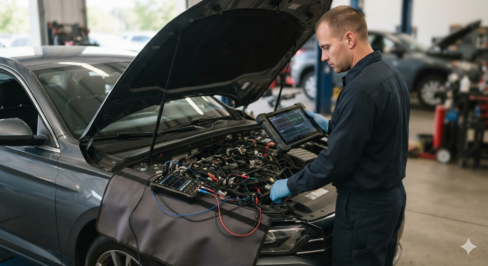
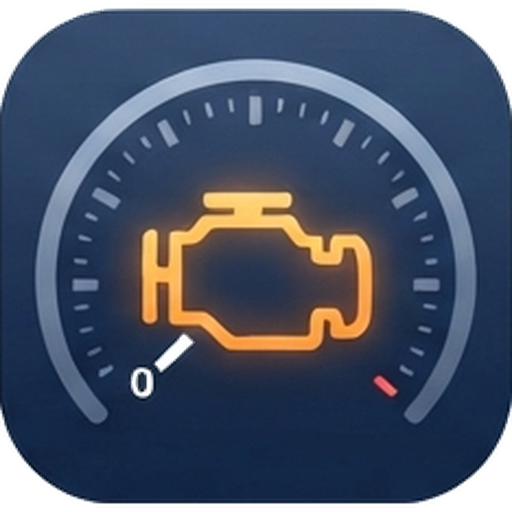
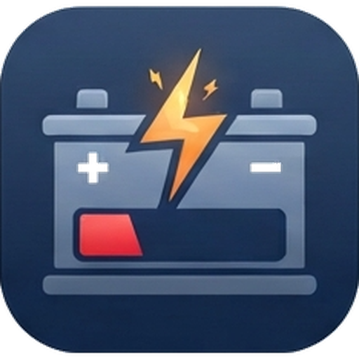
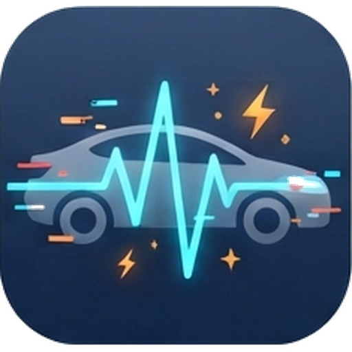
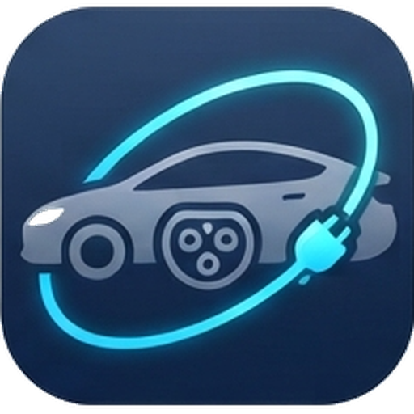
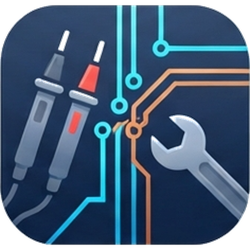
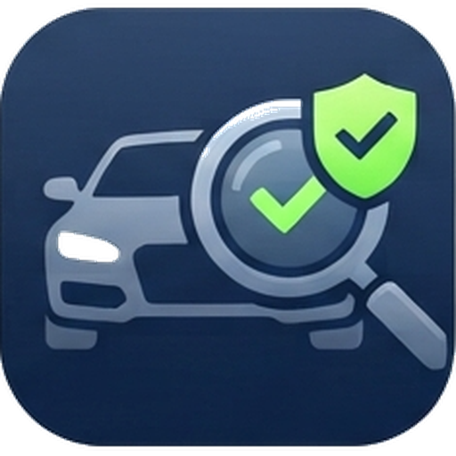

Diagnosis y electricidad del automóvil a domicilio en Málaga
¿Testigo encendido, el coche no arranca o falla algo eléctrico? Voy donde esté tu coche, en tu casa, en el trabajo o en la calle, por toda la Costa del Sol.

Qué le pasa a tu coche
- El testigo del motor está encendido
- Leo las averías con equipo de diagnosis y busco la causa real, no solo el código.
- No arranca o se queda sin batería
- Compruebo batería, alternador, motor de arranque y consumos que la descargan.
- Fallos eléctricos que van y vienen
- Luces, elevalunas, cierre centralizado, sensores y cableado.
- Coche eléctrico o híbrido
- Diagnosis de averías y avisos en vehículos eléctricos e híbridos.
- Reparación eléctrica
- Reparo cableado, sensores y módulos, en el mismo sitio cuando es posible.
- Vas a comprar un coche usado
- Revisión eléctrica y lectura de averías antes de pagar.






Cómo funciona
- Me escribes por WhatsAppMarca, modelo, año y qué le pasa. Una foto del testigo o del aviso ayuda mucho.
- Quedamos en tu zonaAcordamos día, hora y lugar. Voy yo con el equipo.
- Diagnosis en el sitioTe explico qué falla y qué hay que hacer. Si se puede reparar allí, lo hago.
Zona de servicio
Málaga · Torremolinos · Benalmádena · Fuengirola · Marbella · Vélez-Málaga
Y el resto de la Costa del Sol. Si tu coche está en otro pueblo cercano, escríbeme y lo miramos.
¿Tu coche te ha dado un aviso?
Escríbeme con la marca, el modelo y una foto del testigo. Te respondo lo antes posible.